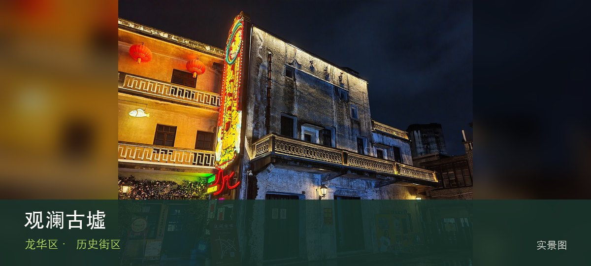

适合谁
适合建筑、地方史和社区观察者；参观时须尊重居民、宗教礼仪与生产秩序。

SHENZHEN GUIDE · 211
观澜 · 历史街区
观澜古墟位于观澜老街，骑楼、古寺、会馆和沿河商业街记录北部墟市传统，更新后的展陈与节庆使历史空间继续被使用。现场的空间线索集中在观澜骑楼街和古寺会馆，把两者连起来看，才不会只剩一个笼统印象。阅读这处地点要把观澜骑楼街与古寺会馆放回仍在使用的街巷或社区中，不把历史空间当成布景。先看公开区域，再按居民生活、礼仪和开放边界调整停留，不进入封闭建筑。
WHY GO
适合建筑、地方史和社区观察者；参观时须尊重居民、宗教礼仪与生产秩序。
第一次到观澜古墟先把观澜骑楼街设为主目标，再视天气和现场边界决定是否前往古寺会馆；返程节点应在出发前确定。
公共交通先到观澜老街片区，再以观澜古墟公开参观入口为终点；多入口地点须按计划游线选择入口，并预先锁定返程站点。
车辆停在观澜古墟外围正规公共停车场后步行进入；不驶入窄巷，不占居民门口、作业区或消防通道。
10 月至次年 4 月步行较舒适；夏季避开正午，雨天留意石板、台阶和老建筑周边湿滑。
NEARBY IDEAS